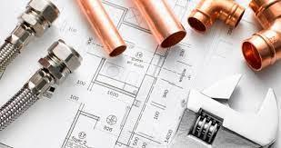
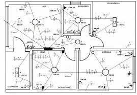

<div class="secao-servicos">
<img src="img/alvenaria.jpg" alt="Serviços de Alvenaria">
<h3>Alvenaria</h3>
<p>Alvenaria é a construção de estruturas e de paredes utilizando unidades unidas entre si ou não, por argamassa. </p>
<img src="img/hidraulica.jpg" alt="Serviços de Hidráulica">
<h3>Hidráulica</h3>
<p>Hidráulica é a parte da física que se dedica a estudar o comportamento dos fluidos em movimento e em repouso.</p>
<img src="img/eletrica.jpg" alt="Serviços de Elétrica">
<h3>Elétrica</h3>
<p>Um dos assuntos mais importantes durante a construção de uma obra são as instalações elétricas, já que a eletricidade é a principal fonte de luz.</p>
</div>
<div class="secao-rodape" alt="Logotipo">
<img src="img/logo-rodape.jpg">
<p>Site desenvolvido pela agência mix</p>
</div>
div img {
width: 300px;
height: 250px;
}
.secao-servicos img {
width: 300px;
height: 250px;
}
.secao-rodape img {
width: 150px;
height: 75px;
}
Alvenaria é a construção de estruturas e de paredes utilizando unidades unidas entre si ou não, por argamassa.
Hidráulica é a parte da física que se dedica a estudar o comportamento dos fluidos em movimento e em repouso.
Um dos assuntos mais importantes durante a construção de uma obra são as instalações elétricas, já que a eletricidade é a principal fonte de luz.
Site desenvolvido pela agência mix